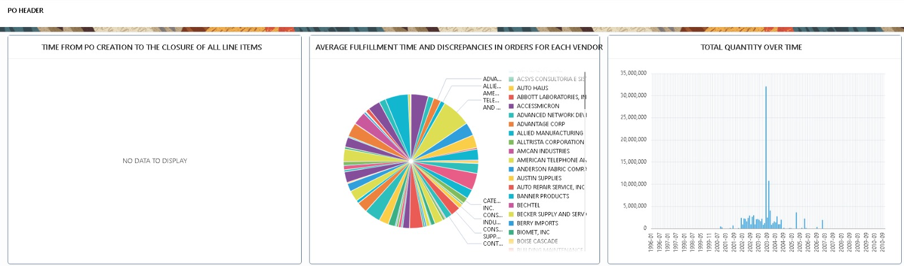

Dashboard Previews
Here are some examples of the dashboards we’ve created for clients:

PO Header
Analyze purchase orders with approval status, PO type, and operating unit trends.

Sales Order Analysis
Monitor order lines, fulfillment times, discrepancies, and supplier/customer breakdowns.

Trial Balance
Summarize balances for all ledgers and accounts for accurate reconciliation.
Payment Register
Track supplier payments and analyze distributions across currencies and methods.